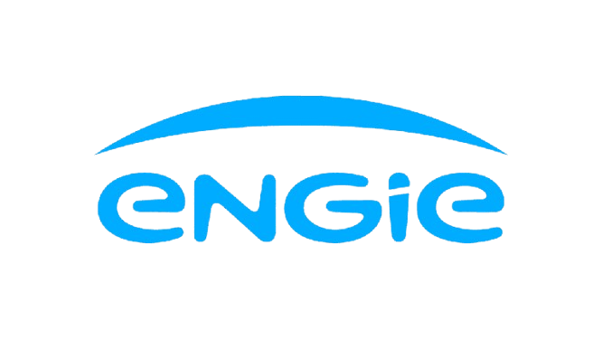
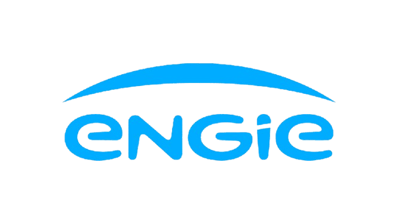

A PhDsoft combina Gêmeos Digitais, IA e dados de operação para antecipar falhas, priorizar intervenções e reduzir paradas — com rastreabilidade e visão executiva.
 

Offshore e naval exigem inspeção, priorização e resposta com evidência. A plataforma centraliza informações para apoiar engenharia, manutenção e gestão.
Consolide inspeções, tendências e histórico para priorizar onde agir primeiro.
Rastreie condições, intervenções e anomalias com contexto do ativo e localização.
Registre evidências, decisões e evolução do risco — pronto para governança.

Mapa de risco por região, histórico de intervenções e trilha de decisão para priorização técnica.
Quero ver na prática
Priorize backlog com base em criticidade, impacto operacional e risco acumulado por ativo.
Solicitar demonstraçãoCentralize evidências, fotos, relatórios e status de anomalias por região/estrutura, com rastreabilidade.
Falar com especialistaRastreabilidade ponta a ponta para auditorias, governança e relatórios executivos com clareza.
Ver segurançaConecte medições, inspeções e histórico de intervenção para um diagnóstico consistente e comparável.
Como funcionaDashboards e indicadores para decisão rápida, priorização e comunicação clara com stakeholders.
Quero um overviewUma jornada simples (e escalável) para colocar a plataforma em produção no seu ativo.
Organização por regiões, componentes e criticidade (estrutura, sistemas, inspeção).
Integração de relatórios, fotos, medições e histórico operacional em um fluxo único.
IA e regras de engenharia para identificar tendências, riscos e recomendações.
Planejamento com evidência: o “porquê” da decisão fica registrado e auditável.
Controle por perfis, rastreio de alterações e organização de evidências para auditoria. Segurança e confiabilidade são parte do produto.
Permissões por função e por ativo, com visibilidade sob medida para cada time.
Alterações registradas e rastreáveis, com histórico de decisões e evidências.
Padronização de documentos e cadastros para consistência e escalabilidade.
Envie uma mensagem e a gente monta uma demo orientada ao seu tipo de ativo e processo.